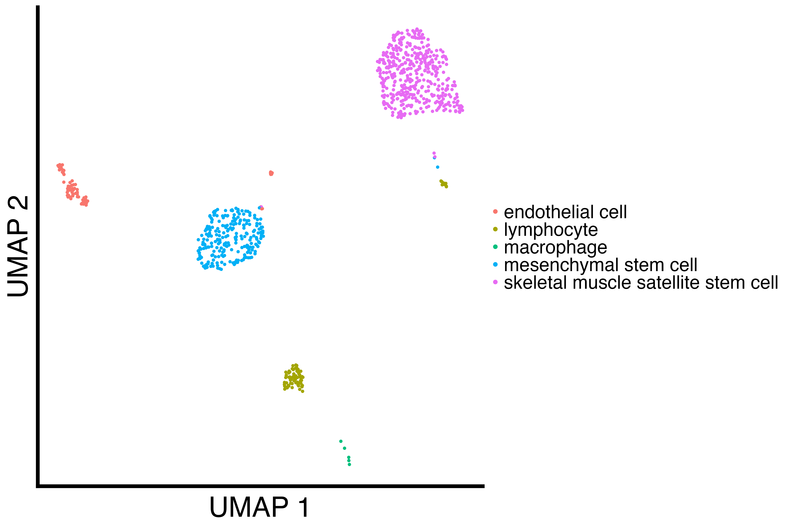
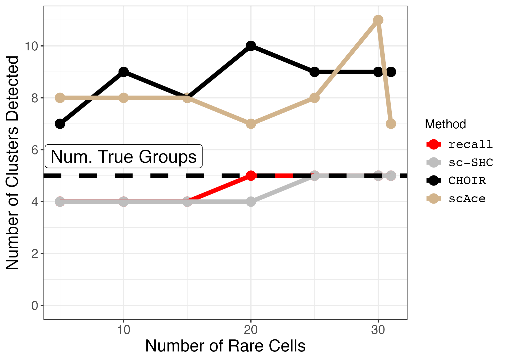
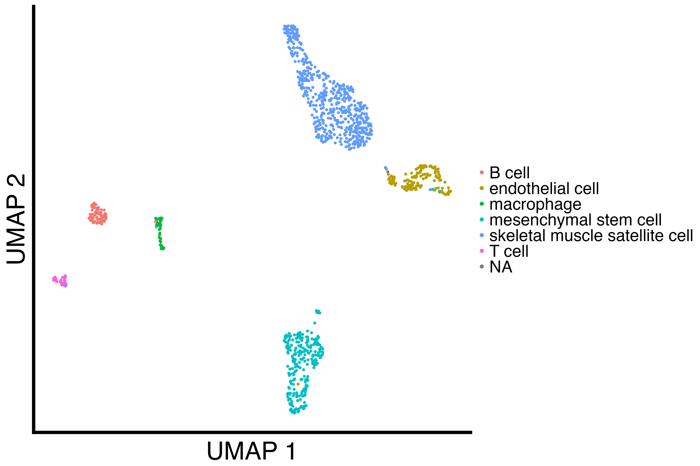
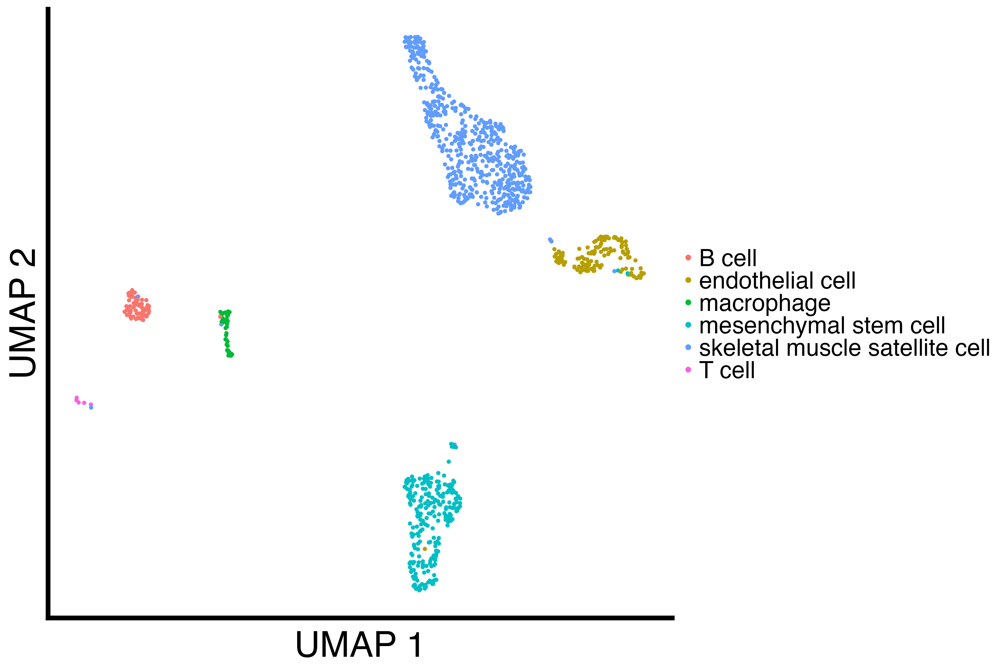
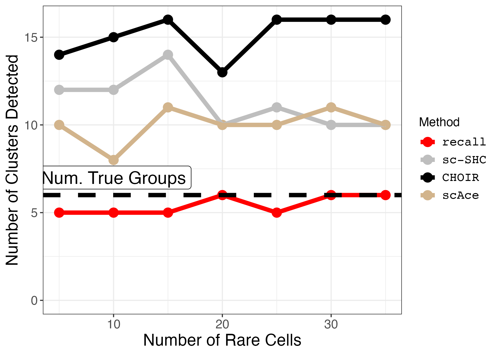

14. Marker Gene Method Comparison (Supplemental Figure S38)
14_tabula_muris_rare_cell_types.Rmd
suppressPackageStartupMessages({
library(splatter)
library(Seurat)
library(SeuratObject)
library(SeuratDisk)
library(patchwork)
library(grid)
library(ggplot2)
library(reshape2)
library(scales)
library(recall)
library(scSHC)
library(CHOIR)
library(LaplacesDemon)
})
set.seed(123456)We begin by defining several functions. First, a function for downsampling a particular cell type.
seurat_num_clusters <- c()
recall_num_clusters <- c()
downsample_cell_type <- function(seurat_obj, cell_type, num_downsampled) {
cells_to_downsample <- Cells(seurat_obj)[which(seurat_obj@meta.data$cell_ontology_class == cell_type)]
cells_to_keep <- Cells(seurat_obj)[which(seurat_obj@meta.data$cell_ontology_class != cell_type)]
downsampled_cells <- sample(cells_to_downsample, size = num_downsampled)
subsetted_seurat_obj = subset(seurat_obj, cells = c(downsampled_cells, cells_to_keep))
return(subsetted_seurat_obj)
}Next, we write a function for downsampling a particular cell type over several different counts down to 5 cells.
rare_cell_type_titration <- function(seurat_obj,
cell_type,
tissue_name,
downsampled_counts) {
# set up vectors for results
tissue <- c()
num_groups <- c()
downsampled_count <- c()
recall_num_clusters <- c()
scSHC_num_clusters <- c()
CHOIR_num_clusters <- c()
cores = 12
j = 0
for (num_downsampled in downsampled_counts) {
j = j + 1
downsampled_seurat_obj <- downsample_cell_type(seurat_obj, cell_type = cell_type, num_downsampled)
# save file to h5ad for scAce clustering
# this also fixes a bug in CHOIR using Seuratv5
downsampled_seurat_obj[["RNA3"]] <- as(object = downsampled_seurat_obj[["RNA"]], Class = "Assay")
DefaultAssay(downsampled_seurat_obj) <- "RNA3"
downsampled_seurat_obj[["RNA"]] <- NULL
downsampled_seurat_obj[["RNA"]] <- downsampled_seurat_obj[["RNA3"]]
DefaultAssay(downsampled_seurat_obj) <- "RNA"
downsampled_seurat_obj[["RNA3"]] <- NULL
filename = stringr::str_interp("h5ad_dir/${tissue_name}_${num_downsampled}_downsampled.h5Seurat")
SaveH5Seurat(downsampled_seurat_obj, filename = filename)
Convert(filename, dest = "h5ad")
downsampled_seurat_obj <- NormalizeData(downsampled_seurat_obj)
downsampled_seurat_obj <- FindVariableFeatures(downsampled_seurat_obj)
downsampled_seurat_obj <- ScaleData(downsampled_seurat_obj)
downsampled_seurat_obj <- RunPCA(downsampled_seurat_obj)
downsampled_seurat_obj <- FindNeighbors(downsampled_seurat_obj)
# null out previous clustering columns
downsampled_seurat_obj@reductions$CHOIR_P0_reduction <- NULL
downsampled_seurat_obj@meta.data$CHOIR_clusters_0.05 <- NULL
downsampled_seurat_obj@meta.data$CHOIR_clusters <- NULL
downsampled_seurat_obj@meta.data$recall_idents <- NULL
downsampled_seurat_obj@meta.data$scSHC_clusters <- NULL
# run CHOIR
print("Running CHOIR")
downsampled_seurat_obj <- CHOIR(downsampled_seurat_obj,
n_cores = cores,
reduction = downsampled_seurat_obj@reductions$pca@cell.embeddings[, 1:10],
var_features = Seurat::VariableFeatures(downsampled_seurat_obj))
# run recall
print("Running recall")
downsampled_seurat_obj <- recall::FindClustersRecall(downsampled_seurat_obj, cores=cores)
# run sc-SHC
print("Running sc-SHC")
scSHC_clusters <- scSHC(GetAssayData(downsampled_seurat_obj,
assay = "RNA", layer = "counts")[Seurat::VariableFeatures(downsampled_seurat_obj),],
num_features = length(VariableFeatures(downsampled_seurat_obj)),
num_PCs = 10,
cores = cores)[[1]]
# store cluster labels
downsampled_seurat_obj[['scSHC_clusters']] <- scSHC_clusters
downsampled_seurat_obj[["CHOIR_clusters"]] <- downsampled_seurat_obj@meta.data$CHOIR_clusters_0.05
# store output data
tissue[j] <- tissue_name
num_groups[j] <- length(levels(factor(seurat_obj@meta.data$cell_ontology_class)))
downsampled_count[j] <- num_downsampled
recall_num_clusters[j] <- length(unique(downsampled_seurat_obj@meta.data$recall_clusters))
scSHC_num_clusters[j] <- length(unique(downsampled_seurat_obj@meta.data$scSHC_clusters))
CHOIR_num_clusters[j] <- length(unique(downsampled_seurat_obj@meta.data$CHOIR_clusters))
}
# save downsampled files for scAce
return(data.frame(tissue, num_groups, downsampled_count, recall_num_clusters, scSHC_num_clusters, CHOIR_num_clusters))
}We analyze the Diaphragm tissue by downsampling the smallest cell type.
diaphragm <- readRDS("Diaphragmcluster_results_seurat.rds")
table(diaphragm@meta.data$cell_ontology_class)
# macrophage has 31 cells, so we downsample
diaphragm_downsampled_counts <- c(31, 30, 25, 20, 15, 10, 5)
diaphragm_cell_type <- "macrophage"
diaphragm_results <- rare_cell_type_titration(diaphragm, diaphragm_cell_type, "Diaphragm", diaphragm_downsampled_counts)
write.csv(diaphragm_results, "diaphragm_downsampling.csv")We analyze the Limb muscle tissue by downsampling the smallest cell type.
limb_muscle <- readRDS("Limb_Musclecluster_results_seurat.rds")
table(limb_muscle@meta.data$cell_ontology_class)
# macrophage has 45 cells, so we downsample
limb_muscle_downsampled_counts <- c(35, 30, 25, 20, 15, 10, 5)
limb_muscle_cell_type <- "T cell"
limb_muscle_results <- rare_cell_type_titration(limb_muscle, limb_muscle_cell_type, "Limb_muscle", limb_muscle_downsampled_counts)
write.csv(limb_muscle_results, "limb_muscle_downsampling.csv")We load the previous clustering results.
diaphragm_df <- read.csv("diaphragm_downsampling.csv", row.names = 1)
limb_muscle_df <- read.csv("limb_muscle_downsampling.csv", row.names = 1)
diaphragm_df <- melt(diaphragm_df, measure.vars = c("recall_num_clusters", "scSHC_num_clusters", "CHOIR_num_clusters" ))
limb_muscle_df <- melt(limb_muscle_df, measure.vars = c("recall_num_clusters", "scSHC_num_clusters", "CHOIR_num_clusters" ))
# add scAce results
scAce_df <- read.csv("scAce_results.csv", row.names = 1)
diaphragm_scAce_df <- subset(scAce_df, tissue == "Diaphragm")
limb_muscle_scAce_df <- subset(scAce_df, tissue == "Limb_muscle")
diaphragm_scAce_df <- melt(diaphragm_scAce_df, measure.vars = c("scAce_num_clusters" ))
limb_muscle_scAce_df <- melt(limb_muscle_scAce_df, measure.vars = c("scAce_num_clusters"))
diaphragm_df <- rbind(diaphragm_df, diaphragm_scAce_df)
limb_muscle_df <- rbind(limb_muscle_df, limb_muscle_scAce_df)We write a function for plotting the downsampling results.
plot_downsample <- function(df, true_groups, annotation_pos) {
small_text_size <- 12
large_text_size <- 16
linewidth = 2
pt_size = 4
p <- ggplot(df, aes(x=downsampled_count, y=value, color=variable)) +
geom_point(size=pt_size) +
geom_line(size=linewidth) +
geom_hline(yintercept=true_groups, linetype="dashed", size=linewidth) +
expand_limits(y=0) +
theme_bw() +
ggplot2::scale_color_manual(values = c("red", "grey", "black", "tan"), labels = c('recall','sc-SHC','CHOIR', "scAce")) +
ggplot2::scale_y_continuous(breaks = breaks_pretty()) +
#scale_y_continuous(breaks=seq(0,150,30)) +
ggplot2::xlab("Number of Rare Cells") +
ggplot2::ylab("Number of Clusters Detected") +
ggplot2::labs(color = "Method") +
ggplot2::annotate("label", x = 10, y = annotation_pos, label = "Num. True Groups", size = 6) +
ggplot2::theme(axis.text = ggplot2::element_text(size = small_text_size),
axis.title = ggplot2::element_text(size = large_text_size),
strip.text = ggplot2::element_text(size = small_text_size),
legend.text = ggplot2::element_text(size = small_text_size, family = "Courier"),
legend.title = ggplot2::element_text(size = small_text_size))
return(p)
}We plot the Diaphragm results.
diaphragm <- readRDS("Diaphragmcluster_results_seurat.rds")
diaphragm_downsampled <- downsample_cell_type(diaphragm, "macrophage", 5)
diaphragm_umap <- recallreproducibility::custom_scatter(diaphragm, "umap", "cell_ontology_class", "UMAP 1", "UMAP 2", 2)
diaphragm_downsampled_umap <- recallreproducibility::custom_scatter(diaphragm_downsampled, "umap", "cell_ontology_class", "UMAP 1", "UMAP 2", 2)
diaphragm_downsampled_plot <- plot_downsample(diaphragm_df, true_groups = 5, annotation_pos = 5.75)
ggsave("diaphragm_umap.png", diaphragm_umap, height = 1.3 * 2 * 1440, width = 1.3 * 3 * 1440, units = "px")
ggsave("diaphragm_downsampled_umap.png", diaphragm_downsampled_umap, height = 1.3 * 2 * 1440, width = 1.3 * 3 * 1440, units = "px")
ggsave("diaphragm_downsampled_plot.png", diaphragm_downsampled_plot, width = 1.4 * 1440, height = 1440, units = "px")| Original Diaphgragm UMAP | Downsampled Diaphgragm UMAP | Diaphgragm Downsampled Plot |
|---|---|---|
 |
 |  |
We plot the Limb muscle results.
limb_muscle <- readRDS("Limb_Musclecluster_results_seurat.rds")
limb_muscle_downsampled <- downsample_cell_type(limb_muscle, "T cell", 5)
limb_muscle_umap <- recallreproducibility::custom_scatter(limb_muscle, "umap", "cell_ontology_class", "UMAP 1", "UMAP 2", 2)
limb_muscle_downsampled_umap <- recallreproducibility::custom_scatter(limb_muscle_downsampled, "umap", "cell_ontology_class", "UMAP 1", "UMAP 2", 2)
limb_muscle_downsampled_plot <- plot_downsample(limb_muscle_df, true_groups = 6, annotation_pos = 7)
ggsave("limb_muscle_umap.png", limb_muscle_umap, height = 1.3 * 2 * 1440, width = 1.3 * 3 * 1440, units = "px")
ggsave("limb_muscle_downsampled_umap.png", limb_muscle_downsampled_umap, height = 1.3 * 2 * 1440, width = 1.3 * 3 * 1440, units = "px")
ggsave("limb_muscle_downsampled_plot.png", limb_muscle_downsampled_plot, width = 1.4 * 1440, height = 1440, units = "px")| Original Limb Muscle UMAP | Downsampled Limb Muscle UMAP | Limb Muscle Downsampled Plot |
|---|---|---|
|  |  |  |